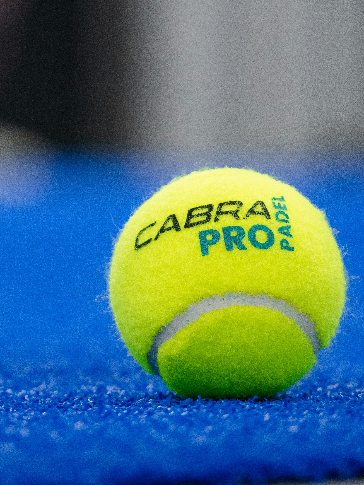

Discover Padel in Ireland
Padel is one of the most social, exciting, and beginner-friendly sports in the world. This website promotes the growth of padel across Ireland and helps new players get started.
Learn MoreWhy Padel?
Padel is easy to start, fun to play, and perfect for people of different ages and skill levels. As the sport grows around the world, Ireland has a great opportunity to build more awareness, more clubs, and more chances for people to get involved.
Why It Can Grow in Ireland
Beginner Friendly
Padel is easier to pick up than most racket sports, making it ideal for first-time players.
Social Sport
It is usually played in doubles, which makes it more active, friendly, and team work focused.
Strong Potential
With more courts, clubs, and promotion, padel could become much more popular across Ireland.
See Padel in Action

Watch a Padel Highlights Video
See the speed, teamwork, and excitement of padel in a short highlights video. This helps new visitors understand why the sport is growing so quickly.
Watch on YouTubeHelp Grow the Sport
Whether you are a beginner, sports fan, student, or club organiser, you can help padel grow in Ireland.
Join the Movement